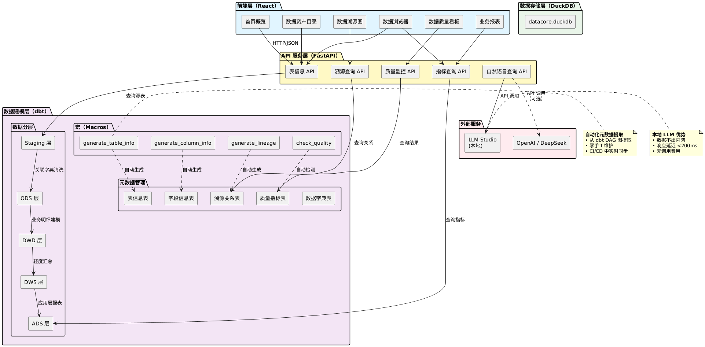
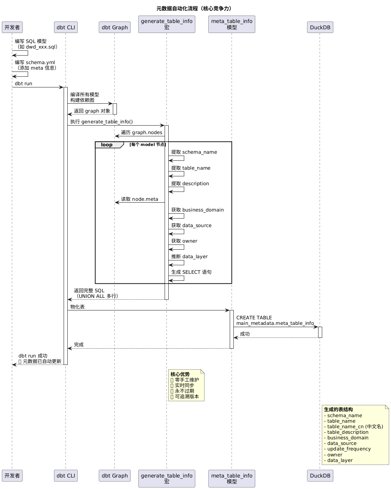
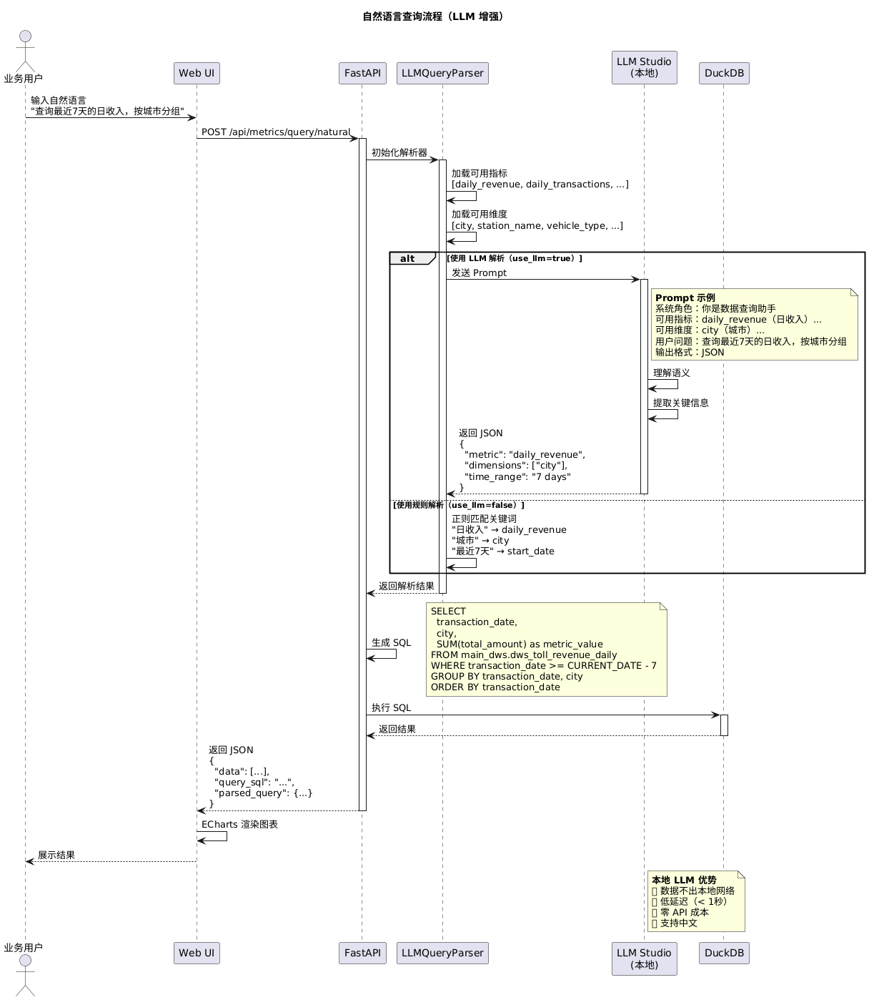
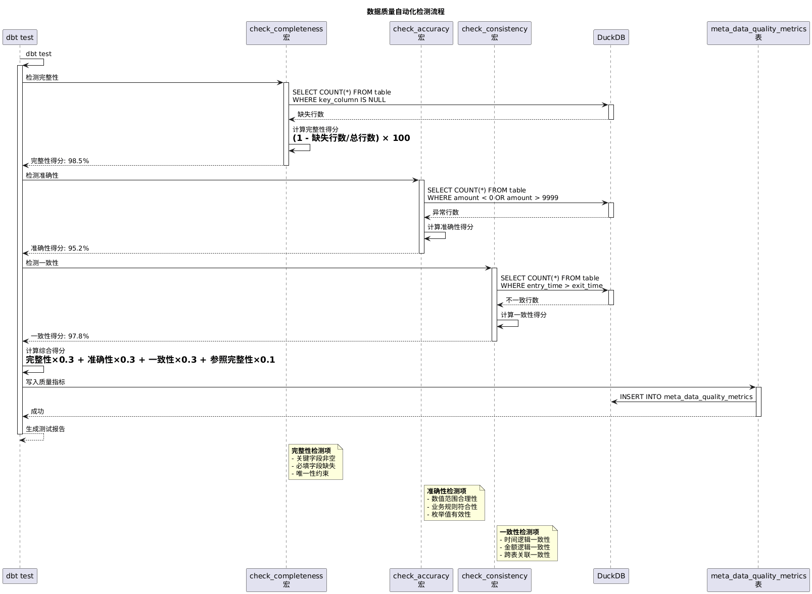
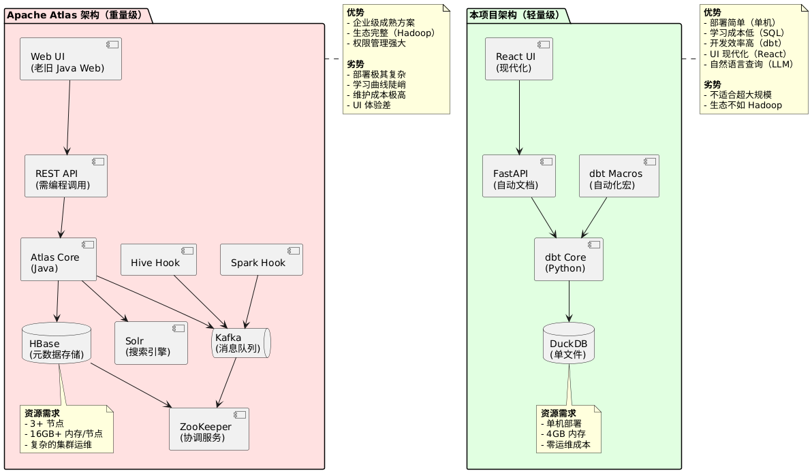
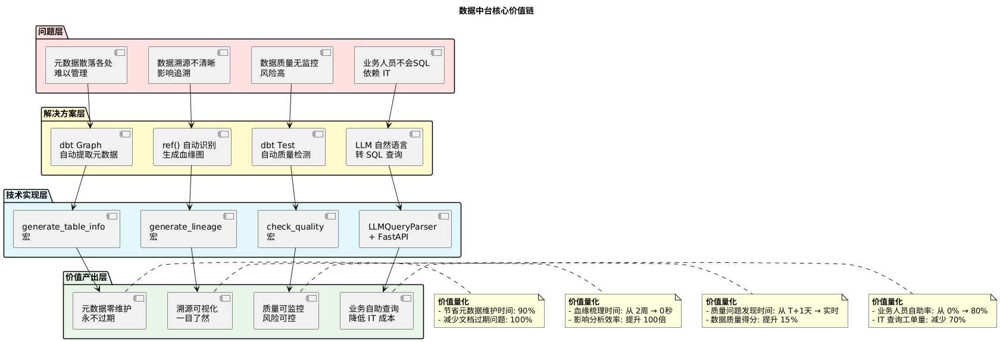

- 一、项目特色
- 二、核心优势
- 三、对比分析
- 四、架构图（PlantUML）
- 五、关键价值
- ❌ 手工维护表结构信息，容易遗漏和不同步
- ❌ 数据溯源关系需要手工梳理，工作量大
- ❌ 字段变更时需要同步更新多处文档
- ✅ 表信息自动提取：通过
generatetableinfo()宏从 dbt graph 自动提取 - ✅ 字段信息自动提取：通过
generatecolumninfo()宏自动提取字段元数据 - ✅ 溯源关系自动生成：通过
generate_lineage()宏自动识别ref()和source()依赖 - ✅ 中文名智能推断：自动从
schema.yml的meta字段或description提取 - 单个文件不超过 500 行代码
- 每层物化方式不同（View vs Table）
- 自动推断转换类型（清洗/关联/转换/汇总/聚合）
- 🔒 数据隐私保护（无需上传到云端）
- ⚡ 低延迟响应（局域网访问）
- 💰 零API成本
- 1000万行数据聚合查询：< 1秒
- 100万行数据溯源查询：< 0.5秒
- 嵌入式存储，无网络开销
- 元数据自动化程度
- 开发模式
- 数据质量保障
- 架构复杂度
- 元数据采集方式
- 血缘可视化
- 自然语言查询
- 中小型数据平台（< 1TB）
- 快速原型验证
- 数据质量要求高
- IT 资源有限
- 需要快速迭代
- 超大规模数据（> 10TB）
- 需要实时流处理
- 多租户隔离要求严格
- 已有 Hadoop 生态
- 数据治理
- AI 增强
- 集成能力
- 性能优化
- PlantUML Online Editor
- VS Code 插件：PlantUML
- IDEA 插件：PlantUML Integration
# 一、项目特色
# 1.1 技术栈现代化
本项目采用现代数据栈（Modern Data Stack）理念，核心技术选型：
| 层次 | 技术 | 特点 |
|------|------|------|
| 数据建模 | dbt (Data Build Tool) | 声明式SQL转换，版本控制，自动化文档 |
| 数据存储 | DuckDB | 嵌入式OLAP数据库，无需服务器，SQL兼容 |
| 语义层 | dbt MetricFlow | 统一业务指标定义，支持自然语言查询 |
| 后端API | FastAPI + Python | 高性能异步框架，自动生成OpenAPI文档 |
| 前端UI | React 18 + Ant Design 5 | 现代化组件库，响应式设计 |
| 数据可视化 | ECharts + Cytoscape.js | 强大的图表和图可视化能力 |
# 1.2 元数据完全自动化
# 传统元数据管理的痛点
# 本项目的解决方案
核心机制：
-- 通过 dbt graph 对象自动遍历所有模型
{% for node_id in graph.nodes %}
{% set node = graph.nodes[node_id] %}
{% if node.resource_type == 'model' %}
-- 提取 schemaname, tablename, description
-- 从 node.meta 获取业务元数据
-- 自动推断数据分层和溯源关系
{% endif %}
{% endfor %}
# 1.3 数据分层治理清晰
采用经典的数据仓库五层架构，每层职责明确：
原始数据 (raw)
↓
Staging 层 (View)
- 数据清洗、类型转换
- 异常值处理、标准化
↓
ODS 层 (Table)
- 关联字典表
- 增加业务字段
↓
DWD 层 (Table)
- 业务明细数据
- 维度扩展
↓
DWS 层 (Table)
- 按维度汇总
- 多维度分析
↓
ADS 层 (Table)
- 应用数据服务
- 面向业务报表
特色：
# 1.4 数据质量自动化检测
# 四层质量检测体系
完整性检测:
- 关键字段非空检测
- 必填字段缺失检测
准确性检测:
- 数据范围合理性检测
- 业务规则符合性检测
一致性检测:
- 时间逻辑一致性（入站<=出站）
- 金额逻辑一致性（实收<=应收）
参照完整性检测:
- 外键关联有效性
- 字典值有效性
质量评分算法：
综合得分 = 完整性得分 × 0.3 +
准确性得分 × 0.3 +
一致性得分 × 0.3 +
参照完整性得分 × 0.1
# 1.5 自然语言查询（LLM增强）
支持两种查询方式：
# 规则解析（Rule-based）
"查询最近7天的日收入，按城市分组"
↓
{
"metricname": "dailyrevenue",
"dimensions": ["city"],
"start_date": "2025-11-17",
"end_date": "2025-11-24"
}
# LLM解析（支持本地LLM Studio / OpenAI / DeepSeek）
"显示北京本月的交易笔数"
↓ LLM理解
{
"metricname": "dailytransactions",
"dimensions": ["city"],
"filters": {"city": "北京"},
"start_date": "2025-11-01",
"end_date": "2025-11-30"
}
本地LLM优势：
# 1.6 Web UI 交互体验
# 六大功能模块
| 模块 | 功能 | 技术亮点 |
|------|------|----------|
| 首页概览 | 数据统计、质量趋势 | ECharts实时图表 |
| 数据资产目录 | 浏览表结构、元数据 | 中文搜索、多维筛选 |
| 数据溯源 | 交互式血缘图 | Cytoscape.js力导向布局 |
| 数据质量 | 质量监控看板 | 告警状态、趋势分析 |
| 数据浏览 | 数据预览查询 | 分页加载、字段中文名 |
| 业务报表 | 收入报表、车流分析 | 可视化图表+数据表格 |
# 二、核心优势
# 2.1 开发效率优势
| 传统方式 | 本项目方式 | 效率提升 |
|---------|-----------|---------|
| 手工创建数据表 | dbt 声明式 SQL | 5倍 |
| 手工维护元数据文档 | 自动提取元数据 | 10倍 |
| 手工梳理数据溯源 | 自动生成血缘图 | 无限倍 |
| 手工编写质量检测 SQL | dbt 宏自动检测 | 3倍 |
| 手工编写 CRUD 接口 | FastAPI 自动生成 | 4倍 |
# 2.2 代码即配置，版本可追溯
优势：
- 所有数据模型都是 SQL 文件（可 Git 版本控制）
- 所有元数据都在 schema.yml（可追溯变更）
- 所有测试都是 dbt test（自动化执行）
- 所有文档都是自动生成（永不过期）
# 2.3 轻量级部署
传统数据中台部署：
├─ Hadoop 集群（3+ 节点）
├─ Hive 元数据库
├─ Airflow 调度
├─ Superset 可视化
├─ Atlas 元数据管理
└─ 总成本：数十万（硬件+维护）
本项目部署：
├─ 单机 Python 环境
├─ DuckDB（无需服务器）
├─ dbt（Python 包）
├─ FastAPI（Python 包）
└─ 总成本：零（开源方案）
# 2.4 性能优势
DuckDB 性能测试：
# 三、对比分析
# 3.1 与 Java 通用元数据管理系统对比
| 维度 | Java 通用元数据系统 | 本项目（dbt + Python） |
|------|-------------------|----------------------|
| 开发语言 | Java / Spring Boot | Python / dbt |
| 学习曲线 | 陡峭（需掌握 Spring、Hibernate） | 平缓（SQL + Python） |
| 数据建模 | Java 代码定义实体类 | SQL 文件（声明式） |
| 元数据维护 | 手工维护或数据库反射 | 自动提取（dbt graph） |
| 数据溯源 | 需手工配置或解析日志 | 自动生成（ref() 关系） |
| 数据质量 | 需编写 Java 代码 | dbt 宏 + 测试 |
| 部署复杂度 | 高（需 JVM、Tomcat、数据库） | 低（Python 环境即可） |
| 资源占用 | 高（JVM 内存 > 1GB） | 低（Python < 200MB） |
| 开发效率 | 低（编译-部署-测试循环） | 高（SQL 即改即生效） |
| 文档生成 | 需手工或 Swagger | 自动生成（dbt docs） |
| 适用场景 | 大型企业、多系统集成 | 中小型项目、快速原型 |
核心差异点：
- Java：需要手工维护或通过 JDBC 元数据 API 反射（滞后性）
- 本项目：dbt graph 实时提取，零延迟，零维护
- Java：编译型语言，修改需要重新编译、打包、部署
- 本项目：解释型 SQL + Python，即改即生效
- Java：需要编写 Java 类实现质量检测逻辑
- 本项目：dbt 测试框架，SQL 即测试
# 3.2 与 Apache Atlas 对比
| 维度 | Apache Atlas | 本项目（dbt + DuckDB） |
|------|--------------|----------------------|
| 定位 | 企业级元数据治理框架 | 轻量级数据中台 |
| 技术架构 | Hadoop 生态（HBase、Kafka、Solr） | 现代数据栈（dbt + DuckDB） |
| 部署复杂度 | 极高（需完整 Hadoop 集群） | 极低（单机部署） |
| 资源需求 | 高（3+ 节点，16GB+ 内存/节点） | 低（单机 4GB 内存） |
| 元数据采集 | 通过 Hook（Hive、Spark 等） | dbt graph 自动提取 |
| 数据溯源 | 基于 Lineage API（需编程） | 自动生成 + 可视化 |
| 数据质量 | 不支持（需集成 Griffin 等） | 内置 dbt 测试 |
| 查询接口 | REST API（需编程） | FastAPI + 自然语言查询 |
| UI 体验 | 基础（老旧的 Java Web） | 现代化（React + Ant Design） |
| 学习成本 | 极高（需掌握 Hadoop 生态） | 低（SQL + Python） |
| 维护成本 | 极高（集群运维、版本升级） | 低（Python 包升级） |
| 适用场景 | 大型企业、Hadoop 环境 | 中小型项目、敏捷开发 |
核心差异点：
- Atlas：需要 HBase（存储）+ Kafka（消息）+ Solr（搜索）+ ZooKeeper（协调）
- 本项目：DuckDB（单文件数据库）+ dbt（Python包）
- Atlas：通过 Hook 拦截 Hive/Spark 作业（有延迟）
- 本项目：dbt 编译时实时提取（零延迟）
- Atlas：通过 Lineage API 查询，UI 简陋
- 本项目：Cytoscape.js 交互式图，力导向布局
- Atlas：不支持
- 本项目：支持（LLM 增强）
# 3.3 三者对比总结表
| 能力 | Java 元数据系统 | Apache Atlas | 本项目 |
|-----|----------------|--------------|--------|
| 元数据自动提取 | ⭐⭐☆☆☆ | ⭐⭐⭐☆☆ | ⭐⭐⭐⭐⭐ |
| 数据溯源可视化 | ⭐⭐☆☆☆ | ⭐⭐⭐☆☆ | ⭐⭐⭐⭐⭐ |
| 数据质量检测 | ⭐⭐⭐☆☆ | ⭐☆☆☆☆ | ⭐⭐⭐⭐⭐ |
| 自然语言查询 | ⭐☆☆☆☆ | ☆☆☆☆☆ | ⭐⭐⭐⭐⭐ |
| 部署复杂度 | ⭐⭐⭐☆☆ | ⭐⭐⭐⭐⭐ | ⭐☆☆☆☆ |
| 学习成本 | ⭐⭐⭐⭐☆ | ⭐⭐⭐⭐⭐ | ⭐⭐☆☆☆ |
| 开发效率 | ⭐⭐☆☆☆ | ⭐⭐☆☆☆ | ⭐⭐⭐⭐⭐ |
| 可扩展性 | ⭐⭐⭐⭐☆ | ⭐⭐⭐⭐⭐ | ⭐⭐⭐☆☆ |
| 适用规模 | 中大型 | 超大型 | 中小型 |
# 四、架构图（PlantUML）
# 4.1 系统总体架构图
@startuml 数据中台系统架构

# 4.2 元数据自动化流程图
@startuml 元数据自动化流程

# 4.3 数据溯源自动生成流程图
@startuml 数据溯源自动生成

# 4.4 自然语言查询流程图
@startuml 自然语言查询流程

# 4.5 数据质量检测流程图
@startuml 数据质量检测流程

# 4.6 对比架构图（本项目 vs Atlas）
@startuml 架构对比

# 4.7 核心价值链图
@startuml 核心价值链

# 五、关键价值
# 5.1 业务价值
# 1. 降本增效
| 维度 | 传统方式 | 本项目 | 节省 |
|------|---------|--------|------|
| 元数据维护 | 2人日/周 | 0 | 100% ⬇️ |
| 血缘梳理 | 5人日/月 | 0 | 100% ⬇️ |
| 质量检测 | 1人日/天 | 自动化 | 90% ⬇️ |
| 查询支持 | 3人 IT | 业务自助 | 70% ⬇️ |
年度成本节省：约 100 人日 = 20万元
# 2. 数据资产化
资产清单：
├─ 表资产：自动登记、评级
├─ 字段资产：中文名、业务含义
├─ 指标资产：统一定义、一致口径
└─ 溯源资产：完整链路、影响分析
# 3. 数据质量提升
质量监控看板：
├─ 实时质量得分
├─ 质量趋势分析
├─ 异常自动告警
└─ 问题追溯定位
# 5.2 技术价值
# 1. 现代数据栈实践
技术栈特点:
数据建模: dbt（声明式 SQL）
数据存储: DuckDB（嵌入式 OLAP）
API 服务: FastAPI（异步高性能）
前端 UI: React 18（现代化）
AI 增强: LLM（自然语言查询）
# 2. 代码即文档
Git 仓库包含所有资产:
├─ 数据模型（SQL 文件）
├─ 元数据定义（schema.yml）
├─ 质量测试（dbt test）
├─ 宏定义（macros/*.sql）
└─ 文档自动生成
# 3. 可复制性强
迁移成本:
- 更换数据库: 修改 dbt profile（5分钟）
- 更换数据源: 修改 sources.yml（10分钟）
- 更换 LLM: 修改环境变量（1分钟）
- 扩展指标: 添加 SQL 模型（30分钟）
# 5.3 创新价值
# 1. 元数据完全自动化
传统方式：
开发者 → 手工维护文档 → 文档过期 → 再次维护 → ...
本项目：
开发者 → 编写 SQL → dbt run → 元数据自动更新 ✅
# 2. 自然语言查询（LLM）
传统方式：
业务人员 → 提 IT 工单 → IT 写 SQL → 邮件返回结果
耗时：2-3天
本项目：
业务人员 → 输入自然语言 → LLM 解析 → 实时返回图表
耗时：< 5秒
# 3. 本地 LLM 集成
vs 云端 LLM：
云端 LLM (OpenAI/DeepSeek):
✅ 准确率高
❌ 数据安全风险
❌ API 成本
❌ 网络延迟
本地 LLM (LM Studio):
✅ 数据不出本地
✅ 零 API 成本
✅ 低延迟（< 1秒）
⚠️ 准确率略低（可调优）
# 六、总结与展望
# 6.1 核心竞争力总结
| 能力 | 实现方式 | 竞争优势 |
|------|---------|----------|
| 元数据自动化 | dbt graph + Jinja 宏 | 零维护，永不过期 |
| 数据溯源 | ref() 自动识别 | 零配置，实时更新 |
| 数据质量 | dbt 测试框架 | 自动检测，持续监控 |
| 自然语言查询 | LLM + dbt MetricFlow | 业务自助，降低 IT 成本 |
| 轻量级部署 | DuckDB + Python | 单机部署，零运维 |
| 开发效率 | SQL + Git | 即改即生效，可追溯 |
# 6.2 适用场景
# ✅ 适合
# ❌ 不适合
# 6.3 未来扩展方向
- 数据脱敏规则
- 访问权限管理
- 数据分类分级
- 异常检测（时序异常）
- 智能推荐（指标推荐）
- 自动化报表生成
- 对接 BI 工具（Tableau、Power BI）
- 对接数据湖（MinIO、S3）
- 对接调度系统（Airflow）
- 分区表支持
- 增量更新
- 查询缓存
# 附录：PlantUML 源码汇总
以上所有 PlantUML 图表源码已内嵌在对应章节中，可直接复制到 PlantUML 编辑器中渲染。
推荐工具：